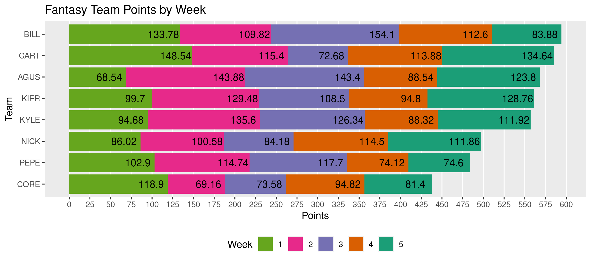

The fflr package is used to query the ESPN Fantasy Football API for both the current and prior seasons. Get data on fantasy league members, teams, and individual athletes.
Installation
You can install the released version of fflr from GitHub with:
# install.packages("remotes") remotes::install_github("kiernann/fflr")
Usage
Here we see how to scrape teams, rosters, scores, and waiver pickups.
Use set_lid() to easily define your league ID (from the URL) in options().
library(fflr) set_lid(252353) # https://fantasy.espn.com/football/team?leagueId=252353&teamId=6 # get last week's roster rosters <- team_roster(week = ffl_week(-1)) (my_roster <- rosters[[5]][-5]) #> # A tibble: 16 x 14 #> year week team slot first last pro pos status proj score start rost change #> <int> <int> <int> <fct> <chr> <chr> <chr> <fct> <chr> <dbl> <dbl> <dbl> <dbl> <dbl> #> 1 2020 2 6 QB Drew Brees NO QB A 18.4 14.5 0.402 0.897 -4.19 #> 2 2020 2 6 RB Alvin Kamara NO RB A 14.6 29.4 0.997 1.00 0.009 #> 3 2020 2 6 RB Jonathan Taylor IND RB A 12.8 17 0.840 0.981 1.89 #> 4 2020 2 6 WR DeAndre Hopkins ARI WR A 10.9 12.8 0.996 1.00 0.007 #> 5 2020 2 6 WR Marvin Jones Jr. DET WR A 9.98 8.3 0.400 0.894 0.47 #> 6 2020 2 6 TE Travis Kelce KC TE A 10.1 15 0.997 1.00 0.007 #> 7 2020 2 6 FX David Johnson HOU RB A 12.8 5 0.718 0.981 -0.515 #> 8 2020 2 6 DS Steelers D/ST PIT DS <NA> 6.19 16.5 0.959 0.996 0.159 #> 9 2020 2 6 KI Greg Zuerlein DAL KI A 7.74 11 0.810 0.868 -3.43 #> 10 2020 2 6 BE Odell Beckham J… CLE WR A 8.87 13.4 0.808 0.988 0.154 #> 11 2020 2 6 BE Cooper Kupp LAR WR A 8.58 8 0.701 0.973 -0.574 #> 12 2020 2 0 BE D'Andre Swift DET RB A 6.12 7.2 0.192 0.848 -2.43 #> 13 2020 2 6 BE David Montgomery CHI RB A 10.1 18.7 0.422 0.917 1.75 #> 14 2020 2 6 BE Christian Kirk ARI WR Q 6.92 6 0.0510 0.592 -11.1 #> 15 2020 2 6 BE Ronald Jones II TB RB A 11.4 8.7 0.235 0.857 -2.21 #> 16 2020 2 0 BE Deebo Samuel SF WR I 0 0 0.0113 0.730 -6.42 # compare vs optimal my_best <- best_roster(my_roster) roster_score(my_roster) #> [1] 129.48 roster_score(my_best) #> [1] 148.28
Matchups return as a tidy tibble of weekly scores by team.
library(tidyverse) (teams <- league_teams()[, -3]) #> # A tibble: 8 x 4 #> team abbrev name year #> <int> <chr> <chr> <int> #> 1 1 AGUS Obi-Wan Mahomey 2020 #> 2 3 PEPE JuJu's Bizarre Adventure 2020 #> 3 4 BILL Bill's Fantasy Team 2020 #> 4 5 CART Kenyan Younghoes 2020 #> 5 6 KIER The Nuklear Option 2020 #> 6 8 CORE BIG TRUZZZ 2020 #> 7 10 NICK Kareemy Johnson 2020 #> 8 11 KYLE Harry Ruggs 2020 scores <- weekly_matchups()
This makes scores over the season easy to plot.

Some functions like roster_moves() only define players by their unique ID.
waiver_adds <- roster_moves() %>% filter( type == "WAIVER", status == "EXECUTED", move == "ADD" )
The included players tibble identifies all 1056 players (as of September 25th, 2020).
waiver_adds %>% left_join(players) %>% select(15:18, bid, team = to_team) %>% left_join(teams[, 1:2]) %>% arrange(desc(bid)) #> # A tibble: 13 x 7 #> first last pro pos bid team abbrev #> <chr> <chr> <chr> <fct> <int> <int> <chr> #> 1 James Robinson JAX RB 32 4 BILL #> 2 Joshua Kelley LAC RB 16 4 BILL #> 3 Jonnu Smith TEN TE 7 1 AGUS #> 4 Mike Gesicki MIA TE 6 5 CART #> 5 Gardner Minshew II JAX QB 5 6 KIER #> 6 Buccaneers D/ST TB DS 5 1 AGUS #> 7 Jarvis Landry CLE WR 5 8 CORE #> 8 Darius Slayton NYG WR 5 1 AGUS #> 9 Mike Davis CAR RB 4 6 KIER #> 10 Darrell Henderson Jr. LAR RB 3 8 CORE #> 11 Zane Gonzalez ARI KI 3 1 AGUS #> 12 Russell Gage ATL WR 2 10 NICK #> 13 Devonta Freeman NYG RB 2 8 CORE
The fflr project is released with a Contributor Code of Conduct. By contributing to this project, you agree to abide by its terms.